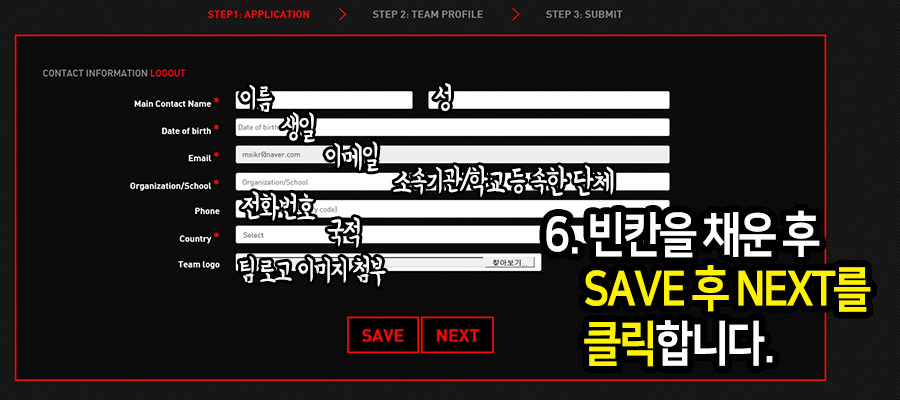

세상에서 가장 가벼운 게이밍 마우스 출시 It is the lightest in the world. It changed the world with claw grip.
굳이 자신에게 맞는 마우스를 사야하나요? 제가 맞춰가면 안되나요?
11:00
물론 그럴수도 있지만, 여기서 소개하는 게이밍 마우스들은 모두 고가입니다. 고가의 장비를 함부로 구매하다간 돈낭비를 일으키기 십상이죠.
11:01
REVIEW창에 있는 별표는 무엇을 의미하나요?
11:02
소개해드린 마우스들 중 선호도가 높은 장비들을 별표로 순위를 매긴 것입니다.
11:05
Gaming Gear Recommandation
Sign in
Body type
Maker
×
로그인 | 회원가입

커스터마이징을 위한 로그인의 절차는 필수 입니다. 회원가입창에서 고객님의 신체조건을 물어볼 수 있습니다.
신체조건은 고객의 맞춤형 장비를 위해서만 쓰입니다. 회원가입 후 My info창이 새롭게 열립니다.
My info창에서 고객님께 알맞은 장비를 선택하시면 됩니다. 좋은 장비를 선택하기를 바랍니다.
×
체형
FPS유저에게 장비는 매우 중요합니다 1초가 아닌 0.1초의 찰나의 순간동안 벌어지는 일들은 앞으로 일어 날 많은 인과관계를 바꿉니다.
1m/s의 장비들은 그 순간을 잘 캐치해 남보다 내가 먼저 상황을 이끌어 가도록 만듭니다. 특히 마우스와 키보드는 여타 다른 장르의 게임보다 FPS
에 영향이 가장 큽니다. 자신에게 맞는 그립법을 알고 손크기는 어떤지, 자신의 어깨 너비에 맞는 키보드는 무엇인지, 책상의 높낮이에 알맞는 의자는
무엇인지 알아야할 것입니다.
×
Maker
FPS유저에게 가장 적합한 장비를 제공하는 Maker는 크게 4곳이 존재합니다. 레이저,조위기어,로지테크,스틸시리즈.
대부분의 FPS유저들은 이 곳에서 자신의 마우스와 키보드를 구하지요. 또한 많은 스폰사에서 지원을 많이 해주는 만큼 프로들의 세계에서도
입증되어 온 메이커들 입니다. 하지만 그렇다고 해서 이 메이커들의 모든 장비가 자신에게 맞다고는 할 수 없습니다.
하이 센서와 멋있는 외형은 이미 보장되었고 저희 사이트에서 고객께서 원하는 메이커의 장비를 소개해드립니다.